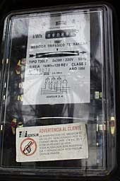

Wind
Energy and Electrical Tariffs
 This
page is relevant for private investors in wind energy, but not
for power companies, which of course know everything about their
own tariff system.
This
page is relevant for private investors in wind energy, but not
for power companies, which of course know everything about their
own tariff system.
Electrical
Energy Tariffs
Electricity companies are generally more interested in buying
electricity during the periods of peak load (maximum consumption)
on the electrical grid, because this way they may save using
the electricity from the less efficient generating units. According
to a study on the social costs and benefits of wind energy by
the Danish AKF institute (see the Links
page), wind electricity may be some 30 to 40 per cent more valuable
to the grid, than if it were produced completely randomly.
 In some areas, power companies apply variable
electricity tariffs depending on the time of day, when they buy
electrical energy from private wind turbine owners.
In some areas, power companies apply variable
electricity tariffs depending on the time of day, when they buy
electrical energy from private wind turbine owners.
 Normally, wind turbine owners receive less
than the normal consumer price of electricity, since that price
usually includes payment for the power company's operation and
maintenance of the electrical grid, plus its profits.
Normally, wind turbine owners receive less
than the normal consumer price of electricity, since that price
usually includes payment for the power company's operation and
maintenance of the electrical grid, plus its profits.
Environmental
Credit
Many governments and power companies around the world wish to
promote the use of renewable energy sources. Therefore, they
offer a certain environmental premium to wind energy, e.g. in
the form of refund of electricity taxes etc. on top of normal
rates paid for electricity delivered to the grid.
Capacity
Credit
To understand the concept of capacity credit, let us look at
its opposite, power tariffs: Large electricity customers
are usually charged both for the amount of energy
(kWh) they use, and for the maximum amount of power
(kW) they draw from the grid, i.e. customers who want to draw
a lot of energy very quickly have to pay more. The reason they
have to pay more is, that it obliges the power company to have
a higher total generating capacity (more power plant) available.
 Power companies have to consider adding generating
capacity whenever they give new consumers access to the grid.
But with a modest number of wind turbines in the grid, wind turbines
are almost like "negative consumers", as explained
in the section on Wind turbines in
the electrical grid: They postpone the need to install other
new generating capacity.
Power companies have to consider adding generating
capacity whenever they give new consumers access to the grid.
But with a modest number of wind turbines in the grid, wind turbines
are almost like "negative consumers", as explained
in the section on Wind turbines in
the electrical grid: They postpone the need to install other
new generating capacity.
 Many power companies therefore pay a certain
amount per year to the wind turbine owner as a capacity credit.
The exact level of the capacity credit varies. In some countries
it is paid on the basis of a number of measurements of power
output during the year. In other areas, some other formula is
used. Finally, in a number of areas no capacity credit is given,
as it is assumed to be part of the energy tariff. In any case,
the capacity credit is usually a fairly modest amount per year.
Many power companies therefore pay a certain
amount per year to the wind turbine owner as a capacity credit.
The exact level of the capacity credit varies. In some countries
it is paid on the basis of a number of measurements of power
output during the year. In other areas, some other formula is
used. Finally, in a number of areas no capacity credit is given,
as it is assumed to be part of the energy tariff. In any case,
the capacity credit is usually a fairly modest amount per year.
Reactive
Power Charges
Most wind turbines are equipped with so called asynchronous generators,
also called induction generators, cf. the section on electrical
parts of a wind turbine. These generators require current
from the electrical grid to create a magnetic field inside the
generator in order to work. As a result of this, the alternating
current in the electrical grid near the turbine will be affected
(phase-shifted). This may at certain times decrease (though in
some cases increase) the efficiency of electricity transmission
in the nearby grid, due to reactive power consumption.
 In most places around the world, the power
companies require that wind turbines be equipped with switchable
electric capacitor banks which partly compensate for this phenomenon.
(For technical reasons they do not want full compensation). If
the turbine does not live up to the power company specifications,
the owner may have to pay extra charges.
In most places around the world, the power
companies require that wind turbines be equipped with switchable
electric capacitor banks which partly compensate for this phenomenon.
(For technical reasons they do not want full compensation). If
the turbine does not live up to the power company specifications,
the owner may have to pay extra charges.
 Normally, this is not a problem which concerns
wind turbine owners, since the experienced manufacturers routinely
will deliver according to local power company specifications.
Normally, this is not a problem which concerns
wind turbine owners, since the experienced manufacturers routinely
will deliver according to local power company specifications.
© Copyright 2000 Soren Krohn. All rights reserved.
Updated 26 September 2000
http://www.windpower.org/econ/tariffs.htm